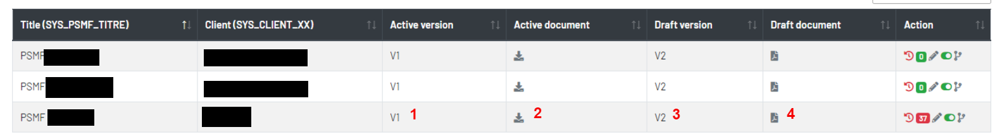

PSMF
Le PSMF est client-dépendant. Il permet à partir de Template de générer un document normalisé.
1. Liste des PSMFs

1Le numéro de version actuel d'un PSMF2La version actuelle d'un PSMF au format pdf à télécharger3Le numéro de version provisoire d'un PSMF4La version provisoire d'un PSMF au format pdf à télécharger Ajoutez un PSMF.
Ajoutez un PSMF.- Montez la version d'un PSMF
- Le nombre de correspondances locales manquants
 Modifiez d'un PSMF et de ces correspondances locales
Modifiez d'un PSMF et de ces correspondances locales Désactivez ou activez un PSMF
Désactivez ou activez un PSMF Historique des modifications d'un PSMF
Historique des modifications d'un PSMF
2. Ajouter un PSMF
Un PSMF donné est caractérisé par :
- Un titre – Obligatoire,
SYS_PSMF_TITRE - Une entité en charge de l’EUQPPV – Obligatoire (« UM » / « Client » / « Presta »), if_um_euqppv endif / if_client_euqppv endif / if_presta_euqppv endif
- Un client – Obligatoire,
SYS_CLIENT_XX - Un EUQPPV – Obligatoire (PV utilisateur),
SYS_EUQPPV_XX - Un deputy EUQPPV – Facultatif (PV utilisateur),
SYS_DEPUTY_EUQPPV_XX - Un contact PV client – Obligatoire (PV utilisateur),
SYS_CONTACT_PV_CLIENT_XX - Un numéro Eudravigilance – Facultatif,
SYS_PSMF_EUDRA_NUMBER
1. La liste des "EUQPPV" et des "Deputy EUQPPV" change en fonction de "Entity EUQPPV".
2. La liste des "Contact PV client" change en fonction du client.
Les infomations de "Deputy EUQPPV" et de "Eudravig Num" sont des options pour un PSMF.
Pour PV utilisateur, vous pouvez choiser plusieurs clients, plusieurs "Work Role (EUQPPV, Deputy EUQPPV et Contact PV client)" et une seule "Rattachement (Entity EUQPPV)". Plus
3. Modifier un PSMF
1Si vous souhaitez afficher les balises correspondent dans une section ou dans une annexe. cliquez sur la filtre.2Visualisez la balise locale dans une section ou une annexe.
1Cliquez sur le bouton si vous souhaitez copier et coller le texte d'aide dans l'editeur.2Cliquez sur le bouton si vous souhaitez visualiser la balise locale dans une section ou une annexe.
si vous souhaitez visualiser la balise locale dans une section ou une annexe.